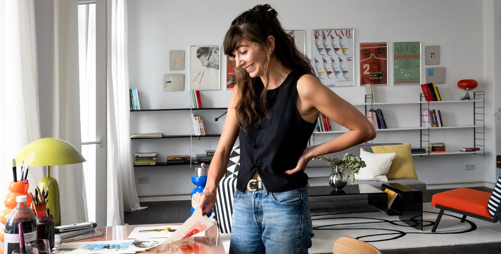
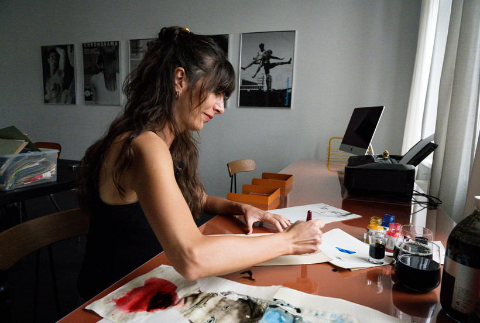
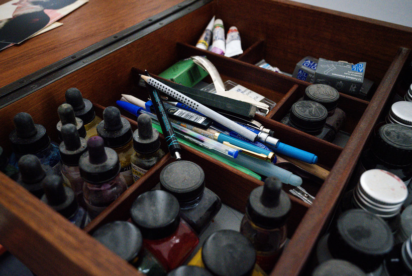
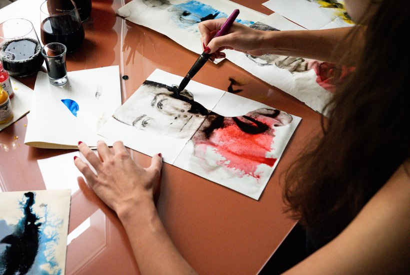
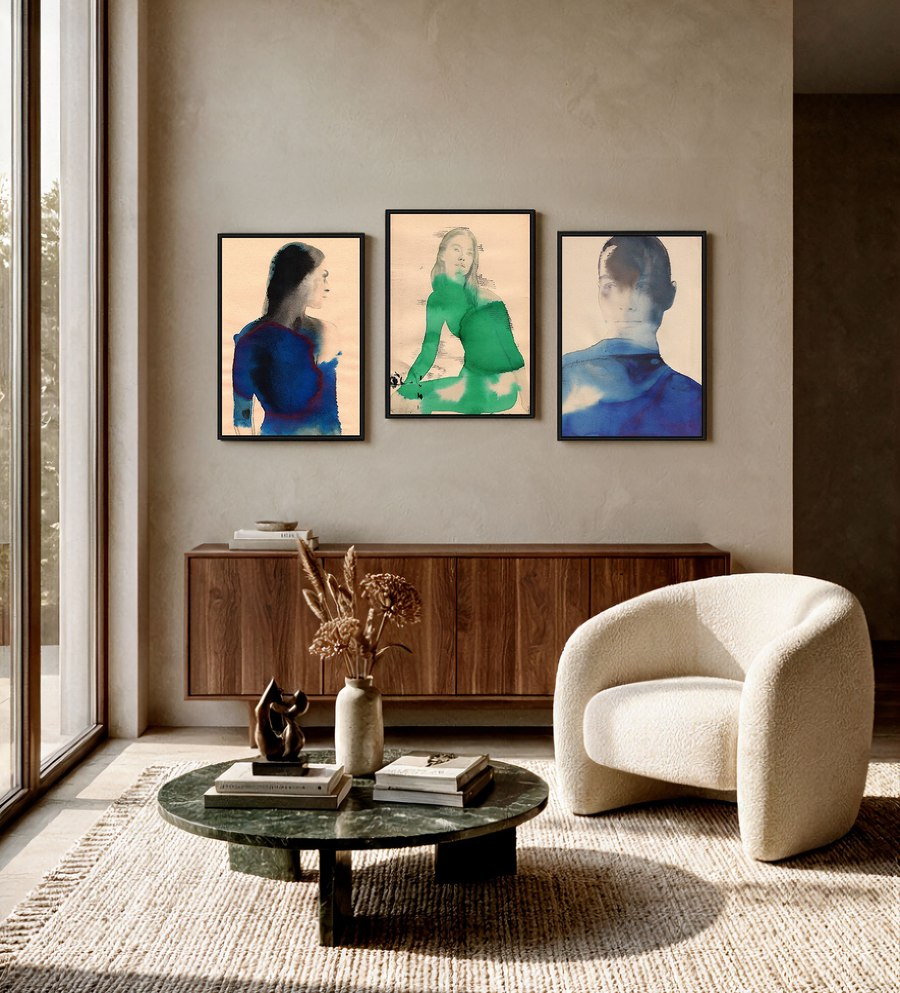
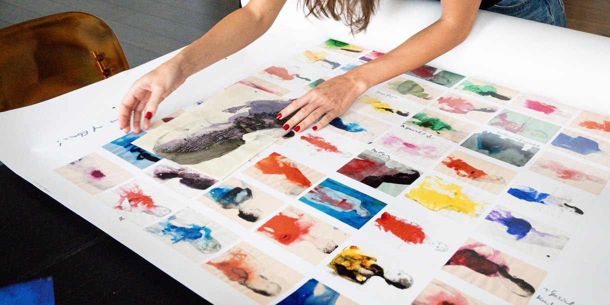
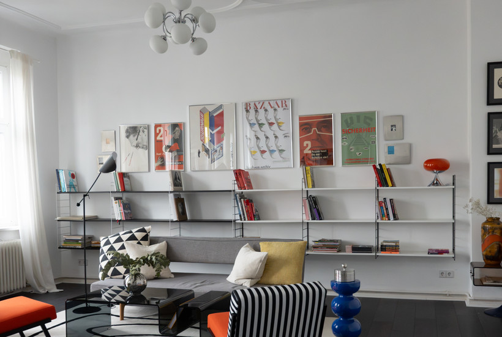

Offenes Atelier: zu Besuch bei Marianna Gefen
Marianna Gefen malt, seit sie fünf ist. Heute unterrichtet sie selbst Freie Kunst. Ihre Arbeiten hängen in Galerien weltweit und erscheinen in Publikationen von der New York Times bis zur Vogue. Ein Gespräch über die Angst vor dem weißen Blatt, die Persönlichkeit alten Papiers und darüber, warum das Beste, was man tun kann, manchmal das Aufhören ist.


Deine Motive sind fast immer Frauen.
Ich bewundere Weiblichkeit sehr. Auch meine Dissertation beschäftigt sich mit Feminismus, besonders mit den Bildwelten der 1960er, 1970er und 1980er Jahre. Diese feinen Linien zusammen mit sehr starker Farbe, das funktioniert für mich. Männer kann ich zeichnen. Ob es mir Freude macht? Nein.

Blue Moon

Restless

Bloom


Midnight Blue

Essence-Arbeiten zu Hause
Wie viele Arbeiten entstehen gleichzeitig?
Zehn oder zwanzig auf einmal. An einem Tag Bleistift, dann die erste Farbschicht, am nächsten die nächste. Von zwanzig mag ich am Ende vielleicht zwei. An einem guten Tag auch fünfzehn.


Alle Werke von Marianna Gefen
Hier rendern die zwölf Editionen, gefiltert auf das Präfix MGF. Das Grid bleibt leer, bis die Werke online sind, und füllt sich dann von selbst.